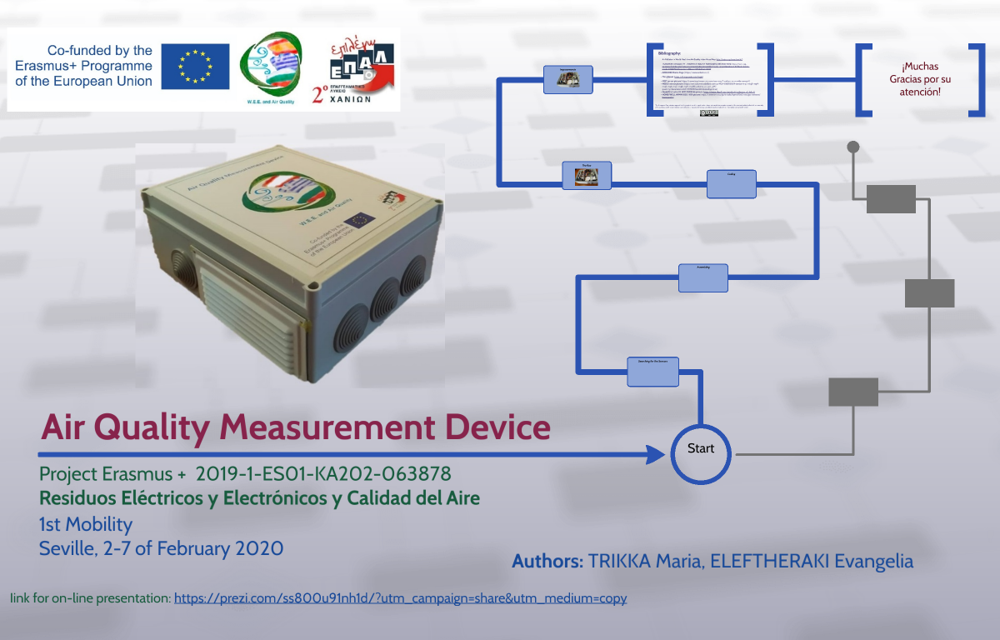
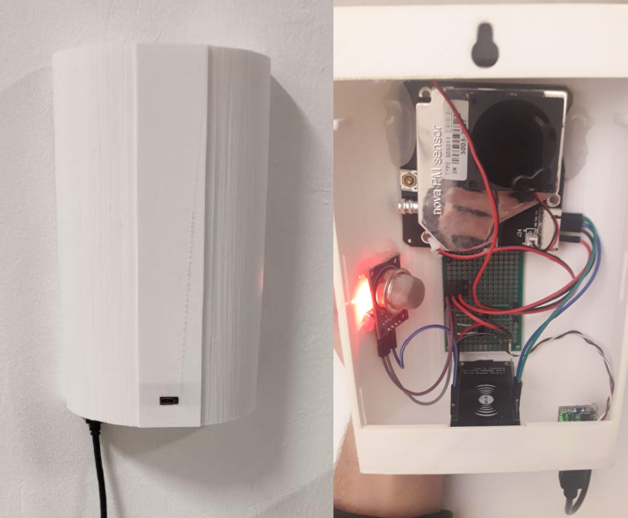

HOME
SOFIA
SEVILLA
CHANIA
Plugins elaborados por:
Ignacio Rodríguez Mesa
y
Daniel Muñoz Rodríguez
Alumnos de 2ºASIR del
IES Punta del Verde
(curso 2020/21)

La descripción del aparato de medida Griego se puede ver en la imagen superior.

En España y Bulgaria se usa el mismo aparato de medida y su descripción se puede ver en la imagen superior.